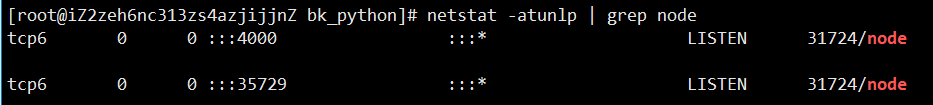

阿里云部署
阿里云部署笔记(centos版本)
购买阿里云主机，开启安全组
云主机实例

配置安全组

安装git、jdk和nodejs
安装jdk
# 安装jdk
rpm -ivh jdk-8u241-linux-x64.rpm
配置jdk环境变量
vi /etc/profile
export JAVA_HOME=/usr/java/jdk1.8.0_241-amd64
export JRE_HOME=/usr/java/jdk1.8.0_241-amd64/jre
export PATH=$PATH:$JAVA_HOME/bin:$JRE_HOME/bin
export CLASSPATH=.:$CLASSPATH:$JAVA_HOME/lib:$JRE_HOME/lib
ps: 若原先存在openjdk，需要先卸载
# 查看jdk列表 rpm -qa|grep java # 卸载 rpm -e --nodeps java-1.8.0-openjdk-1.8.0.181-7.b13.el7.x86_64安装和配置nodejs
# 安装和配置nodejs
cp node-v12.16.1-linux-x64.tar.xz /usr/local/
cd /usr/local/
tar -xvf node-v12.16.1-linux-x64.tar.xz
mv node-v12.16.1-linux-x64/ nodejs
cd nodejs
mkdir node_global
mkdir node_cache
npm config set prefix "/usr/local/nodejs/node_global"
npm config set cache "/usr/local/nodejs/node_cache"
# 配置nodejs
vim /etc/profile
# 在末尾添加
export PATH=$PATH:/usr/local/nodejs/bin # config nodejs
# 执行生效命令
source /etc/profile
安装和配置git
# 安装和配置git
yum install git
git config --global user.name "yourname"
git config --global user.mail "xxxxxxxxxx@mail.com"
# 配置远程仓库 将pub_key黏贴到git
ssh-keygen -t rsa -C "xxxxxxxxxx@mail.com"
安装和配置git
# 安装和配置git
yum install git
git config --global user.name "narutohyc"
git config --global user.mail "1832044043@qq.com"
# 配置远程仓库 将pub_key黏贴到git
ssh-keygen -t rsa -C "1832044043@qq.com"
安装gitbook
# 安装gitbook
npm install gitbook-cli -g
# 添加gitbook软链接
ln -s /usr/local/nodejs/node_global/bin/gitbook /usr/bin/gitbook
# gitbook指令测试
gitbook -V
git访问慢配置
通过修改 hosts文件，重定向网站的访问到代理服务器上

| 系统 | hosts文件路径 |
|---|---|
| Window | %systemroot%\system32\drivers\etc\hosts |
| Mac / Linux | /etc/hosts |
# github
219.76.4.4 github-cloud.s3.amazonaws.com
140.82.113.4 github.com
151.101.185.194 github.global.ssl.fastly.net
刷新DNS缓存
yum install -y nscd
systemctl restart nscd
常用命令
netstat -atunlp查看端口占用

杀死指定进程

gitbook指定端口并后台执行
# 指定端口为4001，并放在后台执行
setsid gitbook serve --lrport=35729 --port=4001
若启动gitbook报错
Starting server ...
Serving book on http://localhost:4000
Error: ENOSPC: System limit for number of file watchers reached, watch '/home/hyc/github/bk_python/node_modules/entities/mathjax/jax/output/HTML-CSS/fonts/Neo-Euler/Symbols'
则执行以下命令即可
echo fs.inotify.max_user_watches=524288 | sudo tee -a /etc/sysctl.conf && sudo sysctl -p
sudo sysctl --system
批量杀死进程
查看进程号
[root@iZ2zeh6nc313zs4azjijjnZ ~]# ps -ef | grep gitbook | grep -v grep|awk '{print $2}'
24064
29387
30425
方式一：batch_shell
#!/bin/sh
dsp_admin_id=`ps -ef | grep gitbook | grep -v grep|awk '{print $2}'`
echo $dsp_admin_id
for id in $dsp_admin_id
do
kill -9 $id
echo "killed $id"
done
方式二：单行执行
#!/bin/sh
ps -ef | grep gitbook | grep -v grep|grep 4000| awk '{print $2}' | xargs kill -9